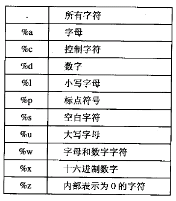
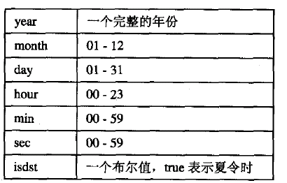

數學庫 math
lua數學庫被包含在 math 中 //全以弧度為單位 sin cos tan asin acos ... //指數 exp //對數 log log10 ... //角度轉弧度 rad //弧度轉角度 deg 取整 floor //返回小於數值的最大整數 ceil //返回大於數值的最小整數 max min 隨機數種子 randomseed 隨機數 random
example
--以當前時間為隨機數種子 math.randomseed(os.time()) print(math.random()) --[0,1)隨機實數 print(math.random(6)) --[1,6]隨機整數 print(math.random(10,16)) --[10,16]隨機整數 print(math.pi) print(math.huge) --支持的最大數值 print(math.sin(math.rad(30))) --角度轉弧度 print(math.deg(math.pi)) --弧度轉角度
table庫
table庫 提供了一些輔助函數 用以 將table作為數組來操作 //將元素插入到 指定位置(不指定 插入到末尾) insert(_table,_where,_value) insert(_table,_value) //刪除 指定位置(不指定為末尾) 元素 並返回被刪除元素值 remove(_table,_where) remove(_table) //排序 可傳入一個可選的 排序準則 sort(_table,_per=_less) //將table中的字符串 連接為一個 字符串 並返回 //可傳入 可選的 間隔符 起始 結束 位置 concat(_table,_gap="",_first=1,_last=#_table)
example
t = {}
--插入
for i=1,10,1 do
table.insert(t,i)
end
--刪除
table.remove(t,5)
--排序
table.sort(t,function (right,left)
return right > left
end
)
--輸出
for i=1,#t,1 do
print(t[i]);
end
--連接字符串
strs = {"this","is","a","fucking","test"}
print(
table.concat(strs," ",2,#strs-1)
)
注意
lua以下標1為起始 而非c/c++中 優雅的 0
字符串庫 string
string是字符串庫 lua5.1開始可以 簡寫對string庫的 調用 string.upper(s) 同 s:upper() //返回字符串 長度 len(str) //將n個str連接為一個字符串 返回 rep(str,n) //返回 全 大寫/小寫 結構 upper(str) lower(str) //返回截取的字符串 [i,j] (索取是從1開始) (i j可取負值 -1[最後一個字符] -2[倒數第二個] ...) sub(str,i,j) //返回 編碼byte 對應字符 char(b) //返回字符串中 第 i個字符對應編碼 //（同 sub i可取 負值） byte(str,i=1) //返回 [i,j] 所有字符編碼 byte* byte(str,i,j) //格式化字符串 類似c printf string.format
字符串匹配
//在字符串中 查找子字符模式pattern（一種類似 正則表達式的 語法）
//(無子串 返回 nil)
//(可傳入 查找起始位置)
find(str,find_pattern,_first=1)
//匹配模式並返回子字符 否則返回 nil
match(str,match_pattern)
//將目標字符串中 所有匹配的 模式 替換為 指定字符串
//(最後一個 可選 參數 可 限定 替換次數)
gsub(str,pattern,str_r,n)
//gmatch 會返回一個 函數 可用於 遍歷所有 匹配子字符串
str = "this is a funcking test 12345"
for w in str:gmatch("%a+") do
print(w)
end
模式
 % 為轉義字符如 %. 代表匹配一個 . (%只轉義 模式字符 普通字符 亦然使用\ 如 \') [] 同正則表達式 如 [0-9] [abcdef] [^abcdef](取補集) + 重複一次 及以上 * 重複任意次次 - 同* ? [0,1]次 ^ 同正則表達式 以此開始 $ ... 結束 () 需要%轉義匹配
捕獲
在模式中 使用 () 擴起來的 內容 match 會捕獲並且 全部 返回
str = "cerberus 12 Soldier"
s1,s2 = str:match("(%a+) %d+ (%a+)")
print(s1) --cerberus
print(s2) --Soldier
gsub 替換
gsub 第三個 參數 除了可以為 字符串 外 亦可為 函數 table
需要使用 () 將 子字符 設置為 捕獲
當為函數 每次 匹配到
用 匹配子字符 捕獲內容 調用 此函數
用 函數返回值 替換 字符串
當為table ...
用 ... 作為key 在table中 查找
以 找到的 value 替換 table不存在此key 不替換
() 為一個 空 捕獲 將 返回 此處的位置 索引
io庫
io操作 都定義在 io 中
簡單io模式
io.write io.read 從當前文件 寫入 讀取 數據
默認當前 文件 為 標準輸入輸出
io.input io.output 接受一個 參數 設置當前文件
write 接受 任意個 字符串 數字(被自動轉化為字符串) 並將其寫入 文件
read 傳入如下 參數 讀取數據 並且返回 失敗返回 nil
"*all" 讀取整個文件
"*line" 讀取一行
"*number" 讀取一個數字
n 讀取n個字符
read("*number") 會自動忽略 數字前端空格 等 支持 + - 科學計算...
print() 類似write 不過其會自動調用 參數的 tostring方法 並增加換行符等
一般 用 print輸出調用 信息
在完整io模式中 使用 write
//刷新 流
flush()
完整io模式
其 類似 c的 FILE* 先使用 io.open 打開一個文件 返回文件句柄
使用 句柄 :（冒號調用語法） write read 讀寫文件
//file為文件路徑 mode為打開模式
//r(讀) w(寫 並清空文件) a(增加 寫入文件尾) b(二進制)
//失敗返回 null
open(file,mode)
local f = io.opem('test.log','r')
data,line = f.read(100,"*line")
--(加入"*line" 將為data讀取100個字符 若 此行未結束 此行剩餘內容 讀取到 line中)
//設置文件位置 (返回設置後的位置)
seek(where="cur",offset=0)
where可取 "set" "cur" "end"
注意
所有函數失敗都返回nil
os庫
os庫中 定義那樣了和 os相關的 操作
//同c time 返回當前 時間數字表示
os.time()
//亦可傳遞一個 table 產生指定時間段 數字表示
print(os.time{year=1970,month=1,day=1}) --其他字段默認為 12:00:00

//date 接受一個格式 將 數字時間 返回為 字符串 （格式同 c sprintf）
date(format,t=time)
print(os.date("%Y/%m/%d %H:%M:%S %A"))
//返回cpu時間秒數
os.clock()
其他
//結束程序
os.exit()
//返回環境變量值 不存在 返回nil
os.getenv("PATH")
//同 c system
os.execute("pause")
//設置lua使用 區域設置
os.setlocale("chs","all")
"all" 使用全部(默認)
"time" 時間控制
"numeric" 數字格式化
"monetary" 不影響lua
"ctype" 單個字符類型 大小寫轉換
"collate" 字符串字母順序